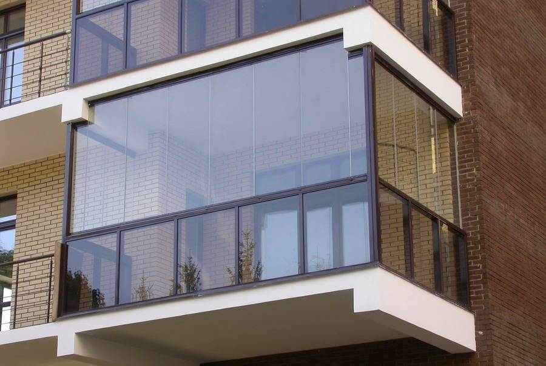

Алюмінієві балкони одна з можливостей створити дизайн і архітектуру Вашого будинку. Дана конструкція принесе в будинок більше світла, простору, тепла, без додаткових теплоізоляційних матеріалів.

Термін експлуатації. Алюміній - довговічний та практичний матеріал, який прослужить Вам понад 70 років.
Великі розміри конструкції. Завдяки своїм конструкційним можливостям, Ви можете створювати алюмінієві конструкції великих розмірів, що дозволить повністю реалізувати всі Ваші дизайнерські та конструкторські задумки.
Фарбування в будь-який колір. Ще однією великою перевагою є можливість фарбування в будь-який колір у системі RAL, що дає додаткову гнучкість у здійсненні будь-якої дизайнерської задачі.
Високі тепло- і звукоізоляційні параметри. Алюмінієві конструкції є одним із самих тілозберігаючих матеріалів, а також мають високі тепло- і звукоізоляційні характеристики. Ви отримуєте захист від шуму, вологи, пилу, що дозволить зануритися в домашній затишок та гармонію.
Безпека та екологічність. Алюмінієві балкони абсолютно безпечні для Вашого здоров'я, вони не виділяють шкідливих речовин при попаданні на них ультрафіолетового світла.
Традиційно, для всіх алюмінієвих конструкцій одним із недоліків є відносно висока ціна виробу.